Este es un ejemplo bastante completo de una interfaz basada en Ncurses que implementa un juego escrito en C.
El juego consiste en desplazar un robot a través de una cuadricula evadiendo los obstáculos para llegar a una salida y lograr hacerlo antes de que el robot se quede sin energía.
A esto, si se le puede llamar un juego, es bastante malo como tal, no es nada divertido ni disfrutarle, no será una aventura mágica ni te tendrá horas jugándolo, incluso sus reglas elementales hacen de él una actividad que no representa ningún reto ni entretenimiento, pero! Es un muy buen ejemplo del uso de la librería Ncurses con el lenguaje C y un no tan bueno, pero simple ejemplo del control de hardware.
Veámoslo en acción:
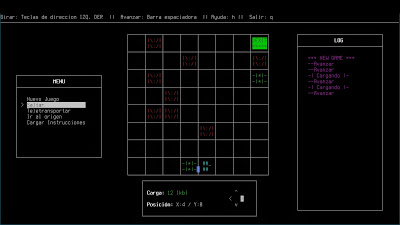 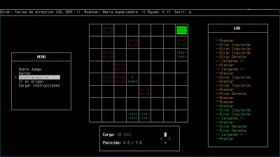 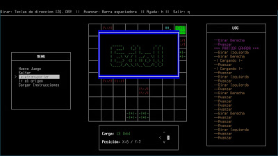
No me detendré a explicar nada sobre el uso de Ncurses pues pretende ser un ejemplo más no una guía, para ello está el excelente HOWTO , pero si que me detendré a explicar algo sobre el hardware:
Para la parte mecánica he utilizado los mecanismos de 2 impresoras viejas montadas sobre una caja de madera hecha a la medida para este propósito, de forma que un mecanismo (eje Y) adherido a la base de la caja y otro mecanismo (eje X) adherido al carro del primer mecanismo, además el eje X tiene un imán para desplazar el robot, el cual es una figura de papel sobre otro imán.
Se consideró también que el motor del mecanismo del eje Y fuera el más potente pues necesita mover con facilidad el peso del segundo mecanismo. Así pues el motor del eje Y se alimenta con 24V y el del eje X con 12V.
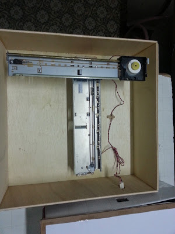 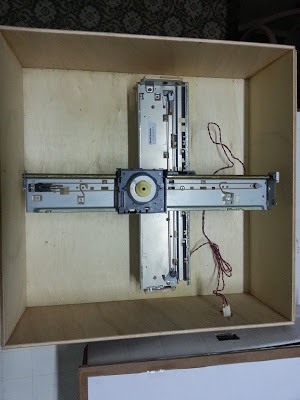 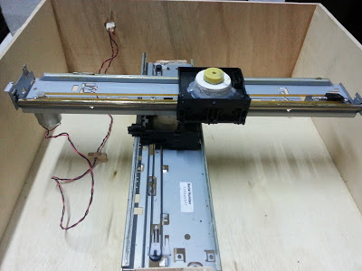 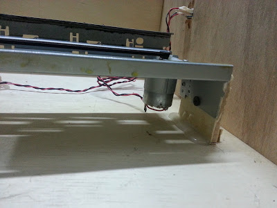 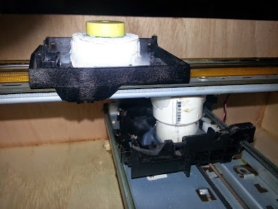 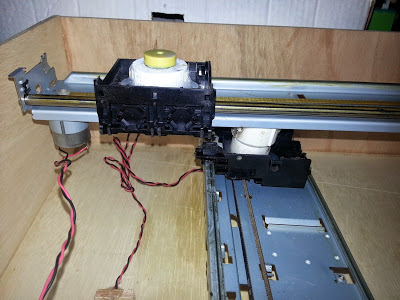 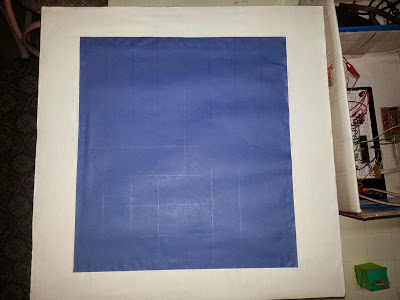 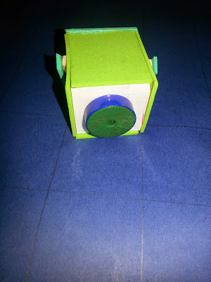 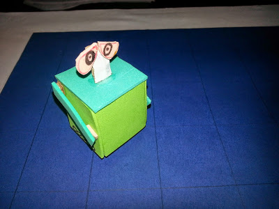
Para la parte de control se utilizó el conversor USB-UART publicado aquí.
Este se encarga de comunicar los comandos enviados por la PC a un microcontrolador PIC18F4550 que a su vez activa 2 puentes H que mueven los motores en la dirección deseada.
En lugar de utilizar varios transistores para implementar el puente H se usó un L293D que tiene un su interior 2 puentes H, suficientes para controlar los 2 motores excepto por un detalle: cada L293D puede utilizar un solo nivel de tensión de salida y nosotros necesitamos 2 (12V y 24V), simplemente usamos 2 L293D y se termina el problema.
Los comandos que recibe el uC de la PC para mover los motores es como:
<eje>:<direccion>:xxxx
<x,y>:<f,b>:xxxxDonde xxxx es un numero de 4 dígitos que indica que tiempo en mili segundos (no es muy preciso) se debe activar el motor.
Ejemplos:
Mover en el eje X hacia adelante (forward) durante 100 mili segundos
<x>:<f>:0100Mover en el eje Y hacia atrás (backward) durante 280 mili segundos
<y>:<b>:0280
El circuito a montar es este:
El firmware del microcontrolador (escrito para el compilador libre SDCC y para el uC PIC18F4550) se encuentra en el directorio hdwr/firmware del código, se lo compila ubicándose en dicho directorio y ejecutando $ make
Lo que generará una salida code.hex que es el programa a grabar en el uC, para este menester se puede utilizar esto.
El código tiene documentación y explica algunos detalles más.
El código está disponible en Github: